JavaScript
Peculiaridades
Objetos
Literal - JSON
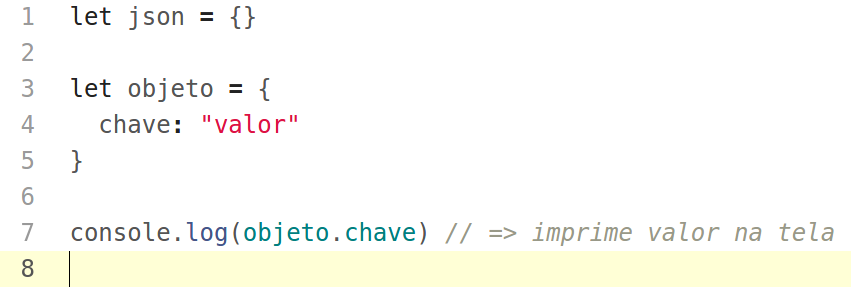Funções
Maneiras de declarar
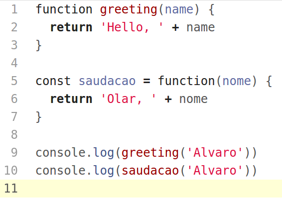Funções
Maneira do ES6
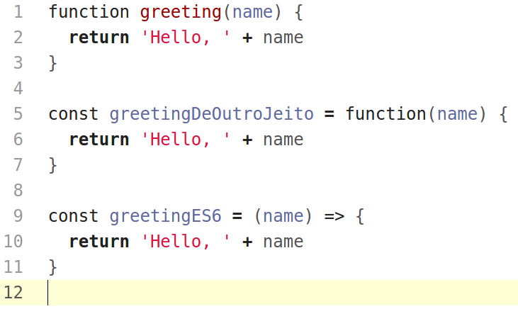Funções
REDUX!
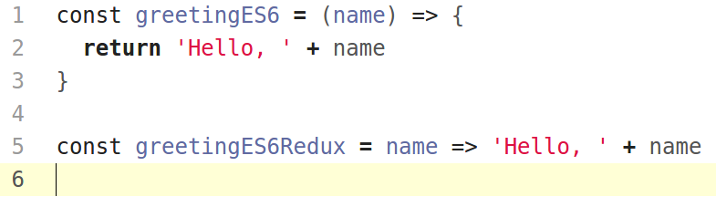Classes
ES6
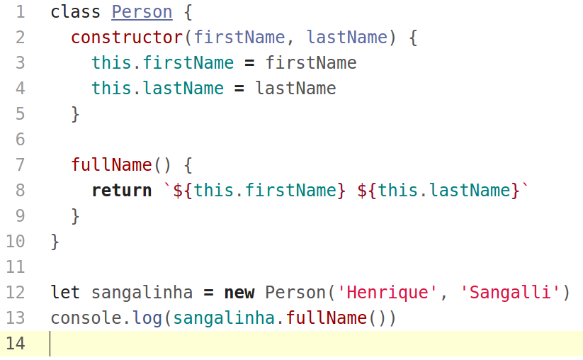Objetos Literais x Uso de classes
Qual usar?
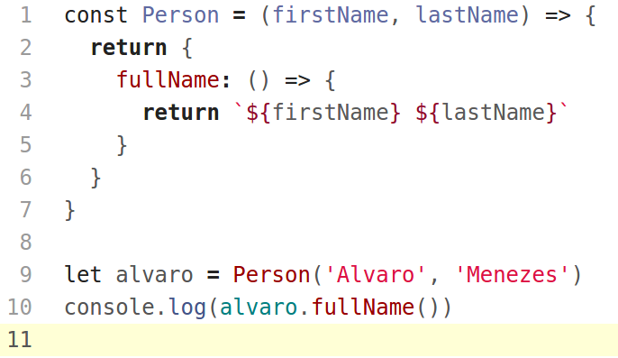Objeto Literal
Valores podem ser... funções!
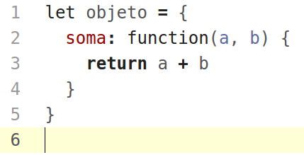Literal - JSON
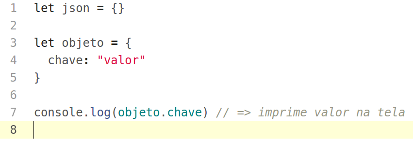Maneiras de declarar
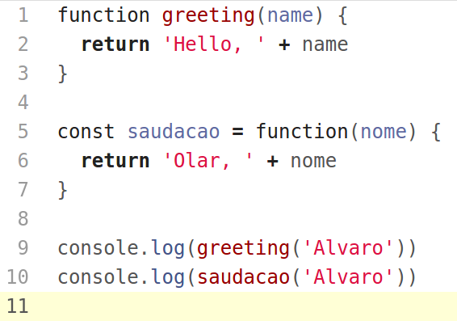Maneira do ES6
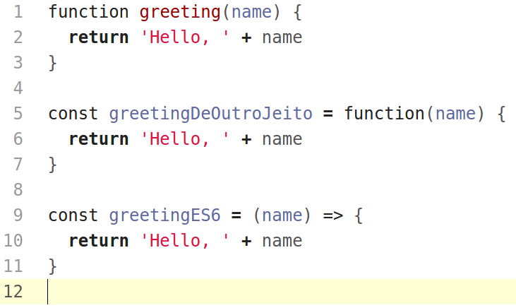REDUX!
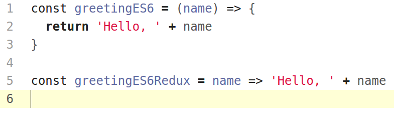ES6
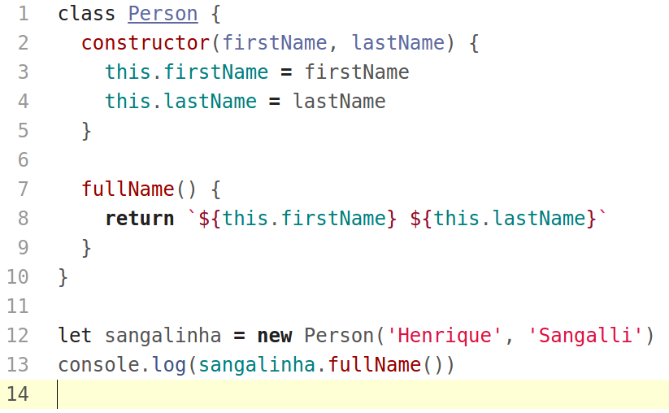Qual usar?
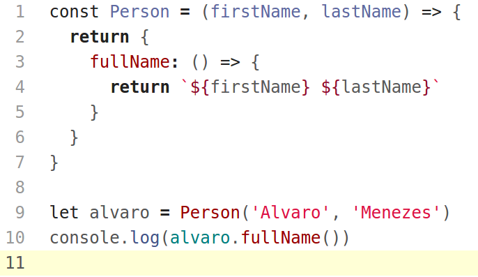Valores podem ser... funções!
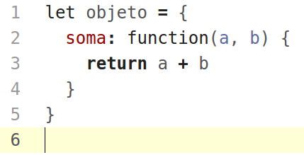